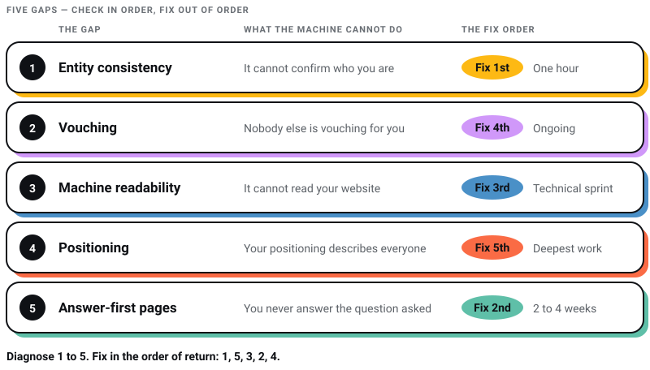

Digital Marketing
Digital Marketing
AEO vs GEO vs SEO: What Actually Matters in 2026 (And What Is Just Noise)
Learn about AEO vs GEO vs SEO. Discover what changed with AI search, what still matters, and how to optimize for Google AI Overviews, ChatGPT, and…

This is the most uncomfortable question in marketing right now:
Why does ChatGPT recommend them and not you?
Not a competitor with a better product. Often a competitor with a worse product, smaller team, less experience. But when a buyer asks AI for a shortlist, their name comes up, and yours does not.
I have watched founders run this test on a call and go quiet.
Here’s the thing. The machine is not biased against you. It is not random either. AI engines pick brands through a process you can reverse-engineer, and when your brand loses, it loses for one of five specific reasons.
This post is diagnostic. Five gaps, in the order you should check them, with the fix for each.
ChatGPT recommends your competitor because it can verify them and it cannot verify you. AI engines name brands they can confirm from multiple angles: consistent business details, third-party mentions, structured readable content, specific positioning, and answer-first pages. A competitor who wins in AI answers has closed more of these five gaps than you have. Every gap is fixable.
Now let us find yours.
Do not diagnose blind. Run this before reading further.
Ask ChatGPT the exact question where your competitor beats you. Then ask the follow-up: “Why did you recommend them?”
The model will usually narrate its own reasoning. It will mention reviews it found, articles it read, details it could confirm.
That answer is your competitor’s playbook, handed to you for free.
Keep it open while you go through the five gaps.

This is the most common gap, and the least glamorous.
AI engines cross-check before they trust. If your business name, services, address, and description do not match across your website, Google Business Profile, LinkedIn, and directories, the machine hits contradictions. Contradictions kill confidence. Low confidence means you get skipped.
Your competitor with identical details everywhere reads as a verified fact. You read as noise.
The test: search your own brand name on ChatGPT and Perplexity. If the answer is vague, outdated, or partly wrong, you have an entity problem.
The fix: one canonical 50-word description of your business. Paste it everywhere. Kill every stray variation, old address, and dead service listing. One hour of boring work, and it is the foundation every other fix stands on.
I have always explained backlinks to clients with one word: vouching. AI search runs on the same principle, wider. I lay out where each engine goes looking for those vouches in the mention playbook.
The data is blunt. 84% of AI citations go to earned media rather than anything a brand publishes about itself, across 25 million links from ChatGPT, Claude and Gemini (Muck Rack, May 2026). Wikipedia and Reddit alone account for over a quarter of ChatGPT’s citations, per a Similarweb analysis of 600,000 citation events.
And review profiles produce the widest gap measured so far. Across 804,491 AI responses covering 1,926 brands, brands with no verified review profile were cited in 1% of relevant answers. Brands with even one to thirteen reviews hit 53.5% (Seer Interactive and Trustpilot, May 2026). I previously wrote that review profiles were worth roughly 3x. I could not trace that number to anything, and the study that does exist points at a far wider gap. Correlation rather than proven cause, but claiming a profile costs you nothing to build.

Your competitor is not writing better ads. They are present in the places AI reads. Directory listings. Review platforms. A mention in two listicles. An old forum thread where someone genuinely recommended them.
You have a beautiful website and silence around it.
The test: look at the sources ChatGPT cited when recommending your competitor. Count how many of those places mention you. Usually the answer is zero.
The fix: work that citation list like a BD pipeline. Claim every relevant directory and review profile. Pitch the authors of the cited listicles. Get quoted in your industry’s publications. One placement in a frequently-cited list outworks months of blogging.
This one hurts because it is invisible to you. Your site looks fine in a browser. To an AI crawler, it may be half empty.
Adobe scanned retail sites and found product pages scoring 66% on AI readability, the worst of any page type they measured. A third of the content on the money pages is invisible to machines. JavaScript-heavy builds are the usual culprit, along with gated case studies and pricing hidden behind contact forms.

AI agents scan for hard facts. What you do, what it costs, proof it works. When those facts are missing or unreadable, the agent scores you low-confidence and moves to the next name. Your competitor with a plain, fast, readable site wins by default.
The test: paste your URL into an AI assistant and ask it to describe your services and pricing. Thin answer, thin machine-readable content. Also view your page source. If your core content is not in the raw HTML, crawlers cannot see it.
The fix: server-rendered pages (we build on Next.js for this), proof and pricing in plain HTML, schema markup for your organization and services. If your site came out of an AI builder, check this before anything else on the list, because that is where the breakage usually is. Published pricing matters more than most founders accept. We publish ours, websites from Rs. 50,000, retainers from Rs. 35,000 a month, and it is a big reason machines describe us accurately.
This is the gap I care about most, because it is not technical. It is a thinking problem.
Run this test on your own homepage:
If your brand description could also describe your top three competitors, AI has no reason to name you specifically.
“Full-service digital agency delivering innovative solutions for modern brands.” That sentence describes ten thousand companies. A machine reading it learns nothing it can attach to your name.
Most companies treat positioning the way they treat design. They want output, not thought. Then they wonder why nobody, human or machine, remembers them.
Specificity is what machines can hold onto. My own version of that sentence is that we design for Coca-Cola, ITC and Marico out of a studio in Salt Lake, Kolkata. It describes exactly one agency in the world. I tell the story of how it got earned, cold call and all, in the mention playbook. What matters here is narrower: a machine can attach that sentence to a name, and it can attach nothing at all to “innovative solutions”.
The test: read your homepage headline, then read your top competitor’s. If you can swap them and nobody would notice, you have this gap.
The fix: rewrite your positioning around facts only you own. Named clients. Real numbers. A specific origin story. A niche you actually dominate. And go one level deeper: publish original data. A small survey, a benchmark, a teardown with real numbers. AI engines hunt for citable facts, and the brand that owns the fact owns the citation.
Last gap. Your competitor has a page that directly answers the buyer’s question. You have a brochure.
When someone asks “how much does a website cost in India” or “best packaging design studio for FMCG,” the AI retrieves pages that answer that exact question, cleanly, near the top. Long-form content with a direct 40 to 70 word answer under a question-shaped heading gets lifted into responses. Pretty pages with vague headlines do not.
There is a compounding effect here, though smaller than I once claimed. I wrote that roughly 76% of AI Overview citations also rank in Google’s top 10, which made answer-first pages look like a free double win. That figure is now 37.9% across 863,000 keyword SERPs, and about a third of cited pages rank beyond position 100 (Ahrefs, March 2026). The two surfaces have come apart. Answering one narrow question unusually well is now the thing that travels, which is good news if you are the smaller brand here.
The test: take the top 5 questions your buyers ask. Check if any page on your site answers each one directly in the first 100 words. Most sites go zero for five.
The fix: build one answer-first page per money question. Question as the heading, direct answer immediately, depth after, a genuine FAQ at the bottom for the questions buyers actually ask. Not FAQ schema, though: Google dropped FAQ rich results from Search on 7 May 2026, and says structured data is not required for AI search at all. Do it because readers scan. This is the Answer-Ready Website standard from the first post in this series.
In our experience, the order of return looks like this:


Honest timeline: first movement in 6 to 10 weeks, durable visibility in 3 to 6 months. This field also shifts fast. Semrush tracked 230,000 prompts and watched Reddit’s share of ChatGPT responses fall from close to 60% in early August 2025 to around 10% by mid-September (Semrush). Six weeks, one fifth of the citation landscape. So re-run your audit monthly. What worked last quarter is not guaranteed this quarter.
Let me tell you the real shift hiding in all this.
Your competitor is not beating you inside ChatGPT. They are beating you on the open web, and ChatGPT is just reading the scoreboard out loud.
Every gap above existed before AI search. Inconsistent listings, no third-party proof, unreadable sites, generic positioning, pages that answer nothing. Buyers felt these problems for years. Machines just made them measurable.
Fix the five gaps, and you are not gaming an algorithm. You are becoming a brand that is easy to verify, easy to recommend, and hard to confuse with anyone else.
The machine is only the messenger.
The rest of this series: whether you still need a website in 2026, the six-step plan for earning mentions, and what AEO, GEO and SEO actually mean before you buy three retainers for one job.
Why does ChatGPT recommend some brands and not others?
AI engines name brands they can verify from multiple angles: consistent business details across the web, third-party mentions and reviews, machine-readable websites, specific positioning, and pages that directly answer buyer questions. Brands failing these checks get skipped as low-confidence.
Can I ask ChatGPT why it recommended a competitor?
Yes, and you should. Ask the follow-up question directly in the same chat. The model will usually explain what evidence it found: reviews, articles, directories, or details it could confirm. That explanation is a free diagnostic of your competitor’s visibility.
How do I find out which sources ChatGPT used?
Run buyer-style prompts on ChatGPT, Perplexity, and Google AI Mode, and record the cited sources for each answer. Those citations show exactly which directories, publications, and threads shape recommendations in your category. Target your outreach there.
How long does it take to overtake a competitor in AI answers?
Expect first movement in 6 to 10 weeks after fixing entity consistency and publishing answer-first pages, with durable gains over 3 to 6 months as earned mentions build. Citation patterns also shift quickly, so audit monthly rather than annually.
Does fixing AI visibility also help normal SEO?
Yes, though less automatically than it used to. Only 37.9% of AI Overview citations now come from pages in Google’s top 10, down from about 76% in July 2025 (Ahrefs, March 2026), so the two surfaces no longer move together. What still transfers is the underlying work: consistent entities, readable pages, direct answers, earned mentions. That is the same work that lifts organic rankings. One effort, two surfaces, no longer one scoreboard.
8 min read 13 cited sources Digital Marketing
Author
Khurshid Alam is the founder of Pixel Street, an AI-native design & development studio. Design thinking on weekdays and spreadsheets on weekends.
He writes about growth, design, and AI, mostly because someone has to say the quiet parts out loud.
Digital Marketing
Learn about AEO vs GEO vs SEO. Discover what changed with AI search, what still matters, and how to optimize for Google AI Overviews, ChatGPT, and…
 Digital Marketing
Digital Marketing
Want ChatGPT to recommend your brand? Learn how AI chooses businesses, where citations come from, and practical ways to increase your visibility.
 Web Design
Web Design
A client asked me this on a call last month: “Khurshid, everyone just asks ChatGPT now. Do we even need a website anymore?” He runs a business doing…